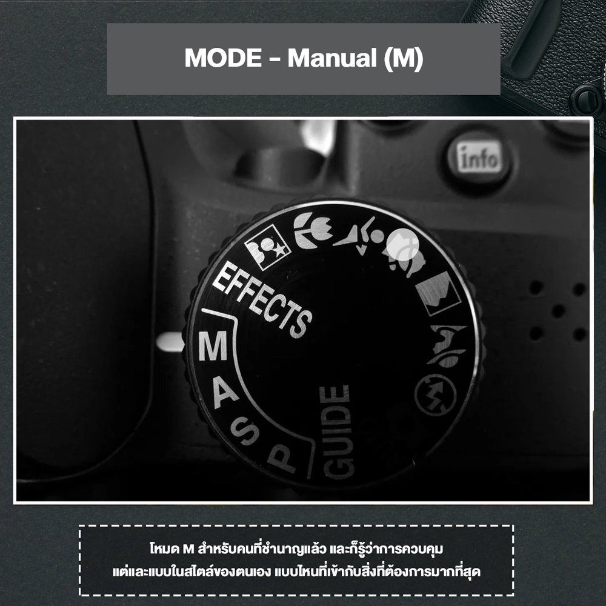

โหมด M, Mode M, Manual

โหมด M, Mode M, Manual
คือโหมดที่เราต้องปรับค่าทุกอย่างของกล้องเองโดยโหมด M เหมาะสำหรับคนที่ ชำนาญ
แล้ว
และก็รู้ว่าการควบคุมแต่และแบบในสไตล์ของตนเอง แบบไหนที่เข้ากับสิ่งที่ต้องการมากที่สุด
เราสามารถปรับตั้งค่าทุกอย่างได้อิสระ ทั้งความเร็วชัตเตอร์, ค่าความไวแสง, รูรับแสง และอื่น ๆ
ที่ต้องการได้อย่างอิสระ
แม้ว่าในตอนแรกโหมดนี้จะซับซ้อนไปสักหน่อย แต่มี ข้อดี
คือช่วยให้เราสร้างสรรค์ภาพได้อย่างใจคิดมากขึ้น
โหมด M, Mode M, Manual
เมื่อถ่ายภาพด้วยโหมด Manual จะต้องตั้งค่ารูรับแสง, สปีดชัตเตอร์ และ ISO ด้วยตนเอง
ไปดูกันดีว่าแต่ละอย่างควบคุมอะไรบ้าง
รูรับแสง Aperture ขนาดของรูรับแสง ควบคุมปริมาณแสงที่จะผ่านเข้ามาที่กล้อง
และยังควบคุมระยะชัดลึกและชัดตื้น
สปีดชัตเตอร์ shutter speed ควบคุมปริมาณแสงที่จะผ่านเข้ามาที่กล้อง
และยังส่งผลต่อสิ่งที่คลื่อนไหวในภาพ
ISO ความไวแสง ช่วยให้กล้องรับแสงได้ดีขึ้นในที่แสงน้อย

โหมด M, Mode M, Manual
ได้หมด ถ้าเรารู้ว่าการตั้งค่าของกล้องให้เข้ากับสถานการณ์นั้น มักจะเป็นการถ่ายภาพที่ไม่ต้องการเปลี่ยนแปลงค่าบ่อยนัก เช่น ถ่ายภาพสินค้า หรือแฟชั่นในงานสตูดิโอ หรือจะเอามาใช้ในการถ่ายภาพปกติก็ได้ถ้าเราถนัดการเซ็ตค่าแบบนี้ครับ
โหมด M, Mode M, Manual
เทคนิคฝึก ถ่ายภาพ ด้วยโหมด M
วิธีการก็คือ ดูว่าเราจะถ่ายภาพลักษณะแบบไหน
หากถ่ายภาพที่เน้นระยะชัด(ชัดตื้นชัดลึก) ก็ต้องควบคุมรูรับแสงเป็นอันดับแรก
หรือการถ่ายภาพที่ต้องเน้นสปีดชัตเตอร์ (หยุดการเคลื่อนไหว หรือการทำให้ดูเคลื่อนไหว)
ก็ต้องควบคุมสปีดชัตเตอร์เป็นอันดับแรก